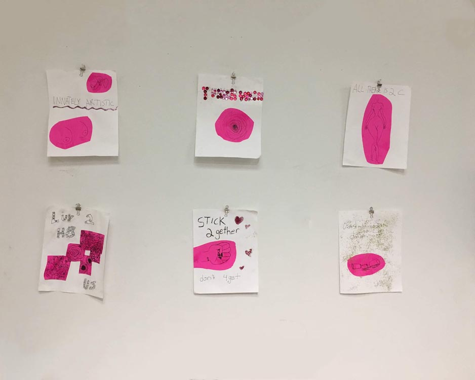
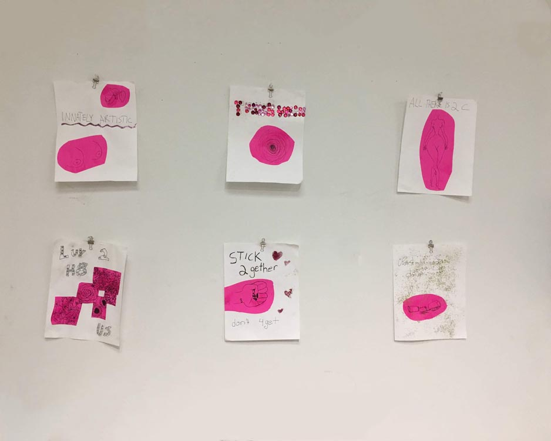

i'm selina gerosa
jacob cooper website
i migrated the website of musician jacob cooper to squarespace and redesigned it. you can check it out here.
2017


forget-her-not
collaboration with olivia gelard. our gallery was inspired by the essay grandmother spider by rebecca solnit. our show pays homage to forgotten women and our own matrilineal line. we also distributed 4 single page zines.
2017


 

inspreel
video made in senior graphic design. a reel based on my inspirations for the semester. you can check out the site here. btw: some sites won’t load because of they don’t have a security certificate (they’re missing the s in https). try clicking the link instead to see the site.
2017